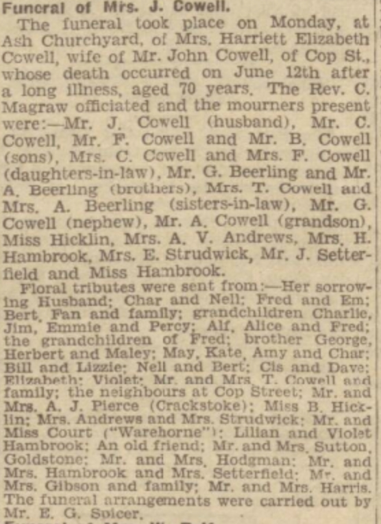
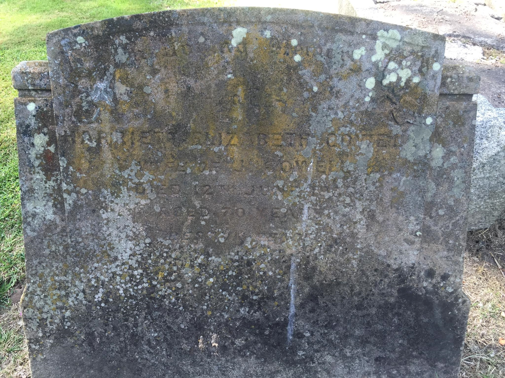
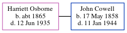

Harriett Elizabeth Cowell (née Osborne) c1865 - 1935
[ Home ] | [ Calendar ] | [ Surnames Index ] | [ Errors ] | [ Family History ]Harriett Osborne, the wife of John Cowell (the great-grandfather of Nigel Horne), was born in Goldstone, Ash, Kent, England c. 18651,2,3,4,5. She married John (a farm waggoner) in Thanet, Kent, England around Nov 18997.
During her life, she was living in Upstreet, Kent, England on 5 Apr 189111; at 2 Woodchurch Farm Cottages, Acol, Kent on 31 Mar 19019; at Woodchurch Farm, Acol, Kent on 2 Apr 191110; and at Sandhills, Eastry, Kent on 19 Jun 19214.
She died on 12 Jun 1935 in Eastry, Kent, England6 and was buried at St Nicholas, Ash, Kent on 17 Jun 19358.
Citations
- 1891 England Census Online publication - Provo, UT, USA: The Generations Network, Inc., 2005.Original data - Census Returns of England and Wales, 1891. Kew, Surrey, England: The National Archives of the UK (TNA): Public Record Office (PRO), 1891. Data imaged from The National
- 1901 England Census Online publication - Provo, UT, USA: The Generations Network, Inc., 2005.Original data - Census Returns of England and Wales, 1901. Kew, Surrey, England: The National Archives of the UK (TNA): Public Record Office (PRO), 1901. Data imaged from the National
- 1911 England Census Online publication - Provo, UT, USA: Ancestry.com Operations, Inc., 2011.Original data - Census Returns of England and Wales, 1911. Kew, Surrey, England: The National Archives of the UK (TNA), 1911. Data imaged from the National Archives, London, England.
- 1921 Census Of England & Wales - Findmypast (was age 56 and the wife of the head of the household)
- England & Wales deaths 1837-2007 - Findmypast
- England & Wales, Death Index: 1984-2005 Online publication - Provo, UT, USA: The Generations Network, Inc., 2007.Original data - General Register Office. England and Wales Civil Registration Indexes. London, England: General Register Office. © Crown copyright. Published by permission of the Cont
- England & Wales, FreeBMD Marriage Index: 1837-1915 Online publication - Provo, UT, USA: The Generations Network, Inc., 2006.Original data - General Register Office. England and Wales Civil Registration Indexes. London, England: General Register Office. © Crown copyright. Published by permission of the Cont
- Kent, Canterbury Archdeaconry burials 1538-1988 - Findmypast
- 1901 England, Wales & Scotland Census - Findmypast (was age 36 and the wife of the head of the household)
- 1911 Census for England & Wales - Findmypast (was age 45 and the wife of the head of the household)
- 1891 England, Wales & Scotland Census - Findmypast (was age 26 and a housekeeper in the household)
Media
Harriett Osborne - funeral notice - Dover Express

Harriett Osborne - gravestone

England & Wales deaths 1837-2007 - BMD/D/1935/2/AZ/000190/107
Canterbury Burials - GBPRS/CANT/D/95453063
1911 England, Wales & Scotland Census Transcription - GBC-1911-RG14-04481-0159-2
1901 England, Wales & Scotland Census Transcription - GBC-1901-0005520259
England & Wales marriages 1837-2005 - BMD/M/1899/4/AZ/000290/254
1891 England, Wales & Scotland Census - GBC/1891/0005761369
1921 Census of England & Wales - GBC/1921/RG15/04492/0313/02
Family Tree
Map
Generated by ged2site. Last updated on Jul 3, 2024
Known Issues
No records of living with anyone